Saint-Brévin

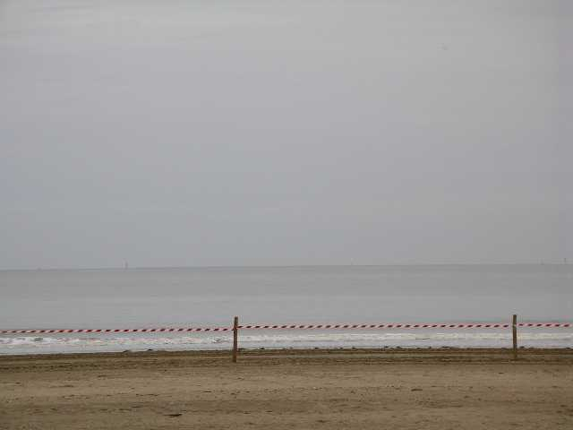
A l'arrivée, météo pas très encourageante, non qu'il pleuve, il n'est pas tombé une goutte du week-end, mais un ciel gris et bas. Et puis, pas de Joel, de François, de Hugo et Audrey, de Sylvien, de Pat et Pat, de Turbulences, de toulousains, etc... Il a du y avoir un petit problème relationnel (déjà, le bulletin d'inscription, 2 pages à remplir, ça fait hésiter !), mais je n'ai pas tout suivi.

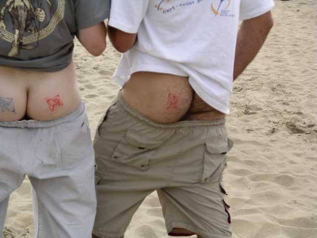
Donc, ça manquera de copains, mais aussi un peu de cerfs-volants (je veux dire des vrais, qui volent tous seuls...). Mais certains avaient décidé de mettre de l'ambiance. A l'accueil, il fallait se faire "tatouer" au tampon, mais l'emplacement était libre....

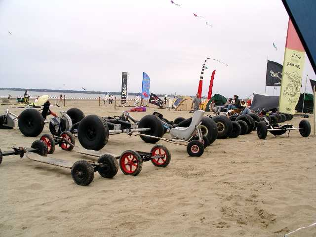
Le groupement cervolistique baptisé "Pirates" par Cyril, qui tenait le micro, groupement qui comprenait les vrais Pirates et les Gwenn Ha Du, était venu en force. Le vent limité n'a guère permis de s'éclater en buggy, mais on a vu beaucoup de voiles Nasa en l'air.

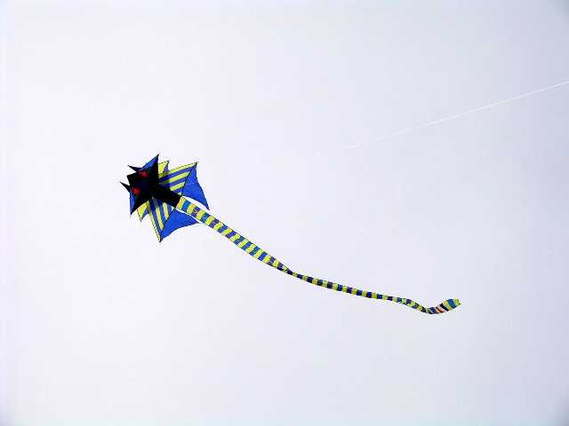
Govert était venu aussi de Hollande avec un nouveau cerf-volant, l'autre ayant été brisé dans un accident (oui, la voiture est morte aussi, mais c'est pas ça l'important !)...

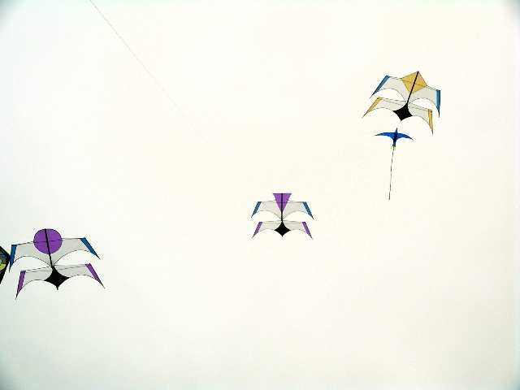
On reverra aussi ces belles créations sur le thème de l'oiseau, mais aux lignes bien architecturées !

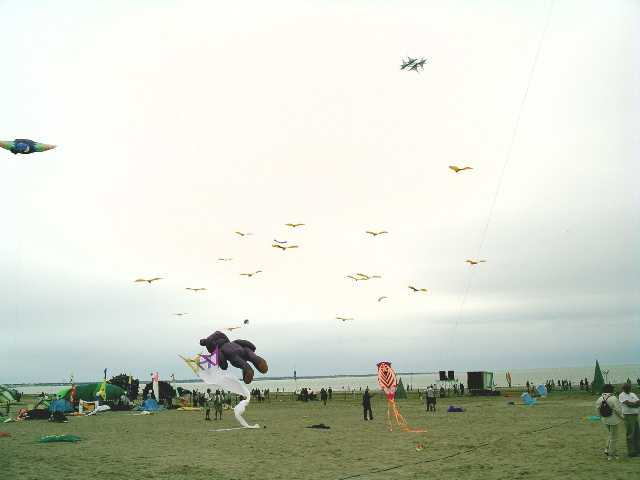
Les Awita étaient venus aussi avec leurs innombrables deltas jaunes...

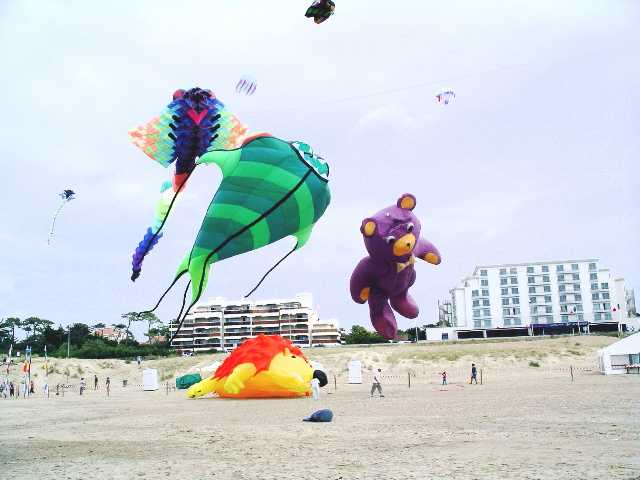
...et les gonflables : raie, poisson vert, nounours... Z'auriez pu sortir l'éléphant, j'aime bien, moi, l'éléphant !

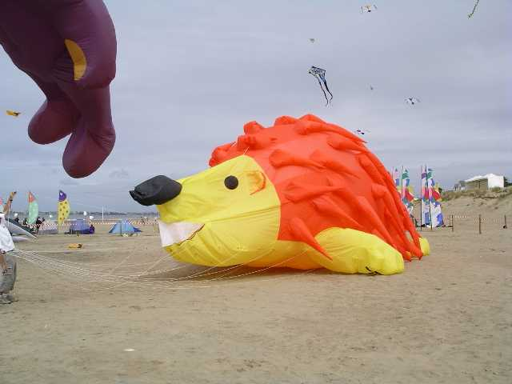
Pour la première fois, je peux prendre une photo de l'énorme Hérisson gonflé (pas trop, mais quand même) dont j'avais entendu parler...

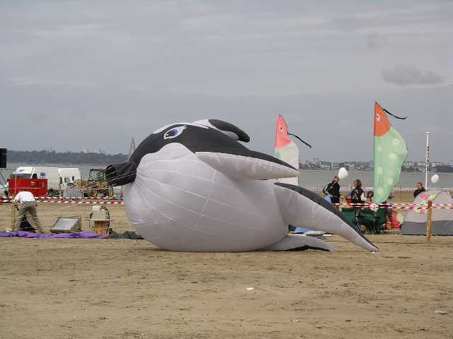
Dans les gonflables de sol, ce gentil baleineau du type Fugu...

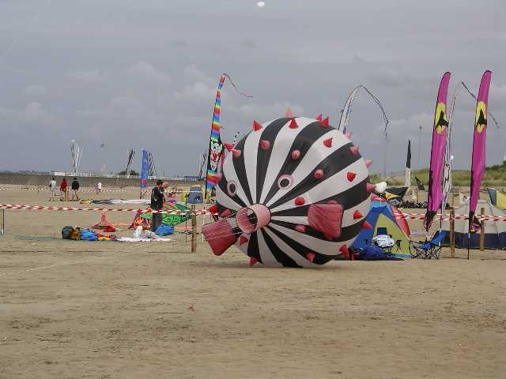
...et celui-ci, malheureusement plein de boutons rouges ce jour-là !

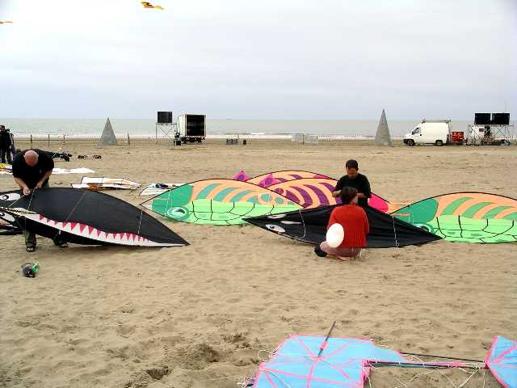
Il y a aussi un beau parc de Sentinelles (design Ramlal) mais très colorées à l'opposé des modèles très sobres ! Le vent ne leur permettra pas de voler, en tous cas je ne les ai pas vus en l'air.

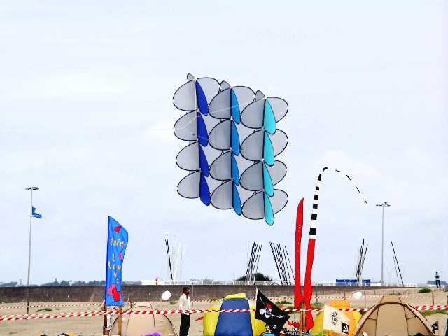
Ce cerf-volant original à base de cercles assemblés à 90° volera, lui, et bien.

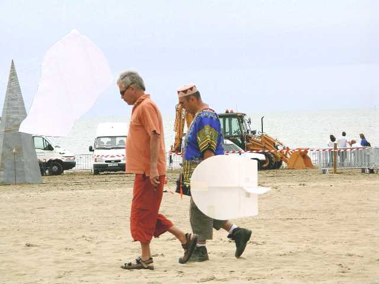
Pendant les calmes, nous aurons des démonstrations d'avion ultra-léger et de planeur télécommandés. Le planeur est lancé à la main comme par un discobole, sauf que des fois il touche par terre ce qui brise l'empennage et la prestation !

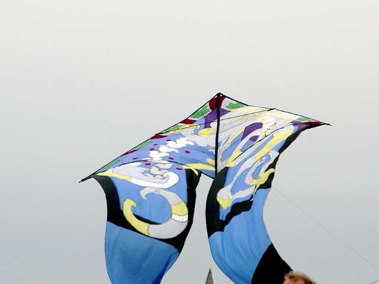
Ce grand pyrodelta bleu est décoré de façon psychédélique et splendide...

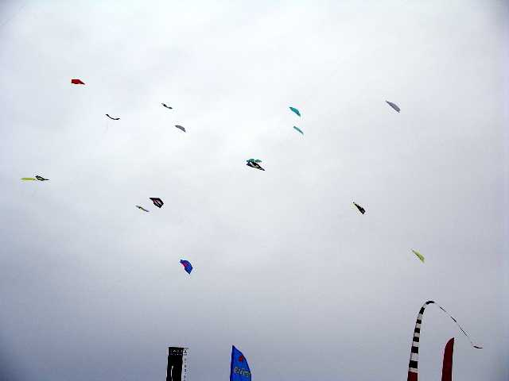
Samedi et dimanche, combat de Rokkakus. C'est Nest qui a gagné les deux fois, donc il a remporté la coupe, la bouteille et les pots de confiture...

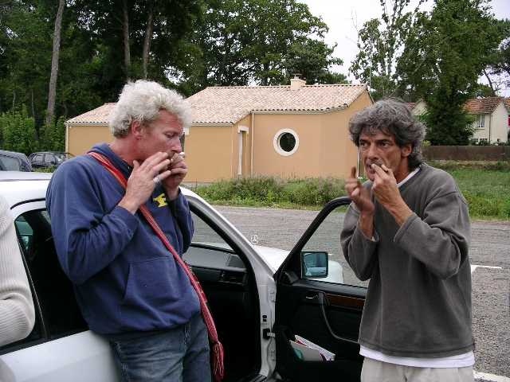
Dom a trouvé un collègue pour son concert de guimbarde ! Il n'a pas arrêté du week-end, dans sa boutique, et même le soir (très tard, Dom, on m'a rapporté) au camping...

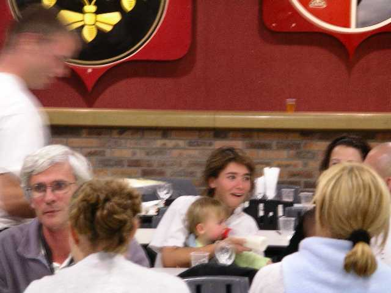
Le soir, repas à la salle de l'Etoile. Lorane, la fille de Blandine, prend une petite avance...

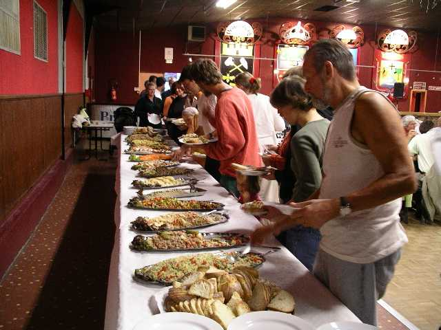
Le buffet est bien fourni comme d'habitude et on échappera aux discours cette année...

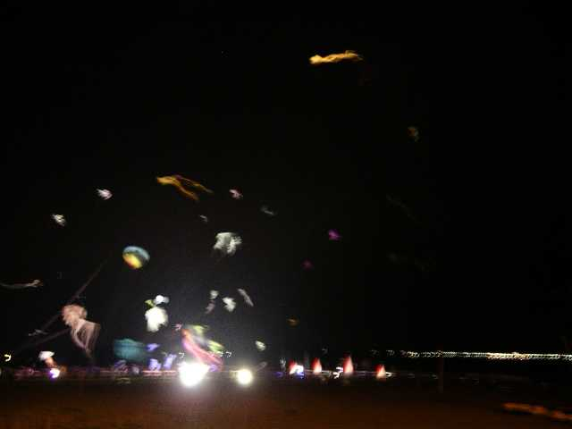
Le vol de nuit qui suit est bien éclairé, et le vent est remonté, suffisamment pour se faire plaisir... Ensuite, feu d'artifice pour bien finir la soirée !

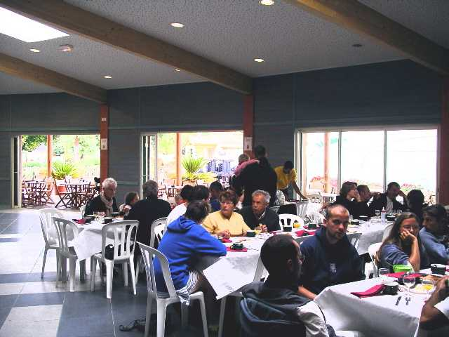
Le dimanche matin, petit-déjeuner de luxe offert au camping 4 étoiles ! A droite, la piscine avec bassin couvert, bassins extérieurs, toboggans, etc...

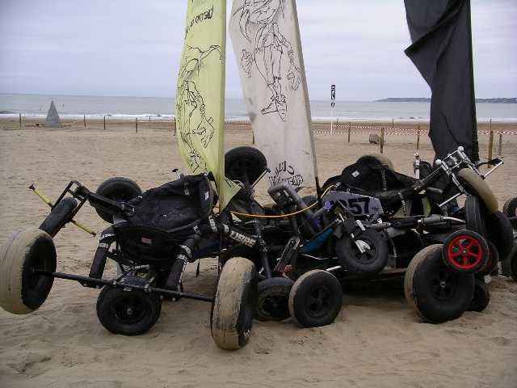
Pour être tranquilles pour le vol de nuit, les Pirates et consoeurs avaient "rangé" leur chars, rien n'a bougé.

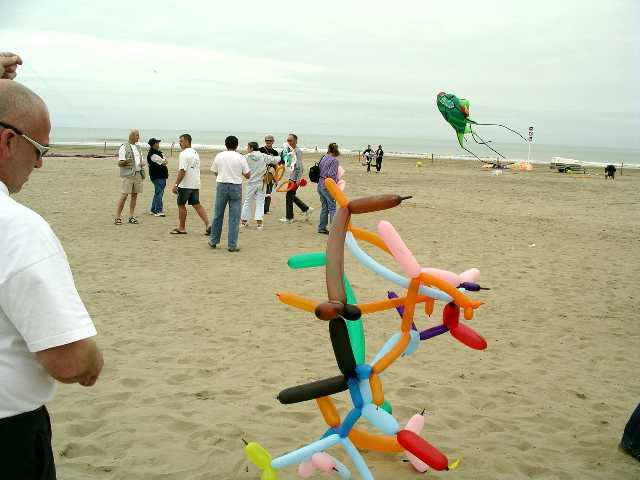
Le dimanche, concours de création avec les matériaux fournis, principalement des ballons tubulaires gonflables...

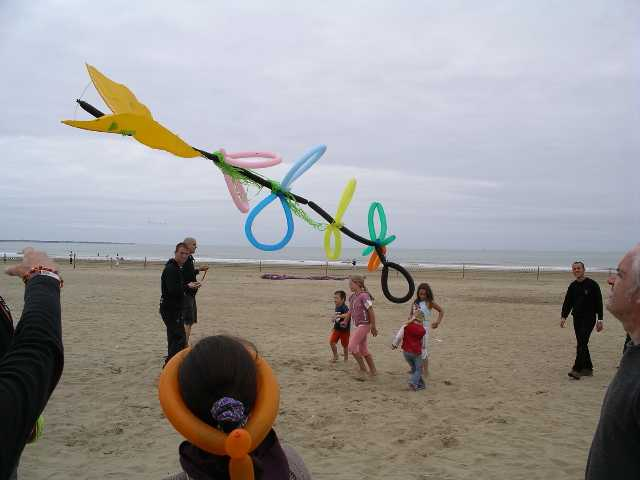
Il y a aussi du papier, du scotch et quelques rares barres...

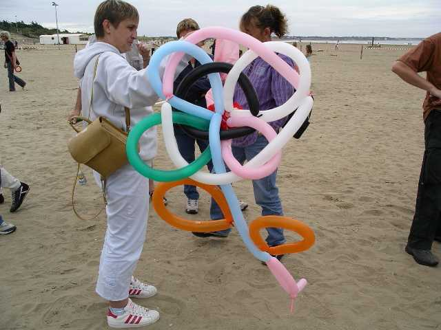
Celui-là constitue un esthétique entrelac mais les qualités aériennes se sont avérées très limitées...

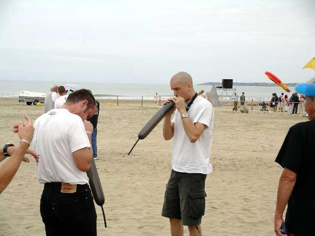
Chez les Awita, ça gonfle à tour de bras et à pleins poumons...

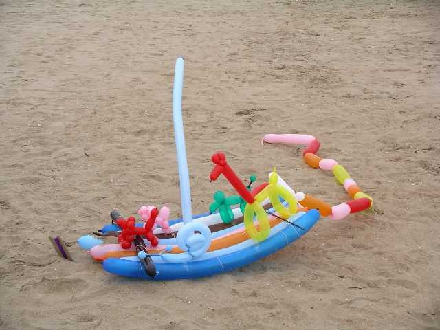
L'oeuvre a pris forme, une arche de Noé, avec des animaux s'il-vous-plaît !

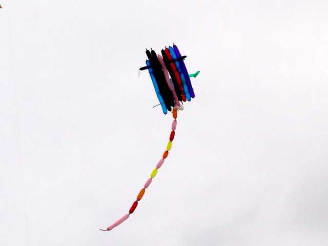
Ce seront les gagnants, pour l'imagination et pour la qualité du vol.

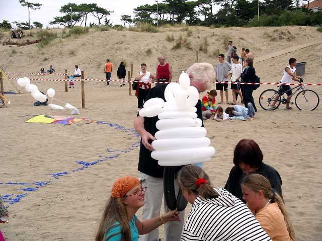
Le Bibendum de Nest peut voler, contrairement aux apparences, mais pas longtemps : il suffit de lâcher l'ouverture des ballons noirs du bas et... pchhchch...

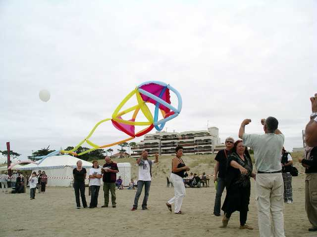
Celui-là vole un peu, mais de préférence sur le dos (pourtant je leur avais dit quoi faire !).

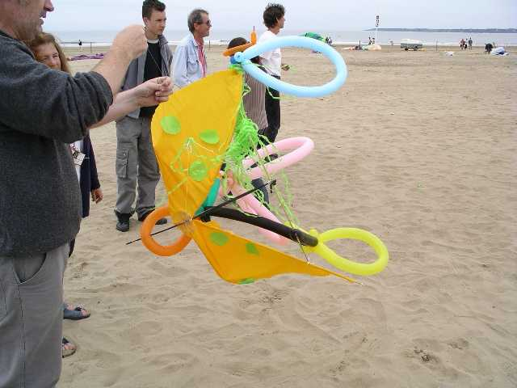
Là, complexité ne rime pas bien avec efficacité.

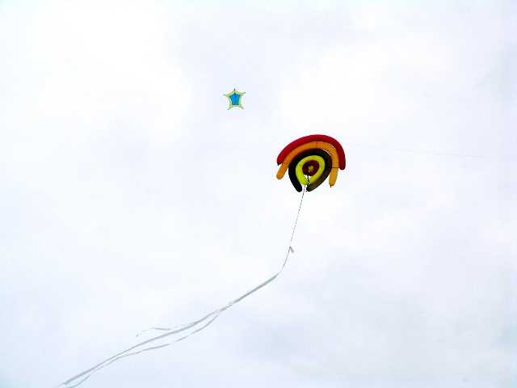
Celui-ci était celui des organisateurs. Hors concours, dommage, car simple, esthétique et volant parfaitement !

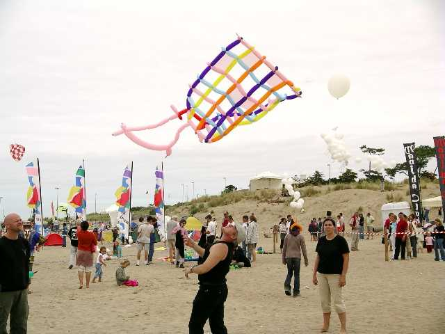
Celui-là, beaucoup de travail de tressage, a volé un peu, mais pas très stable.

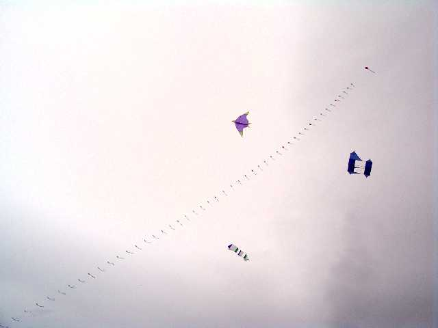
Pendant ce temps, ça continue à voler. Un train a pris l'air !

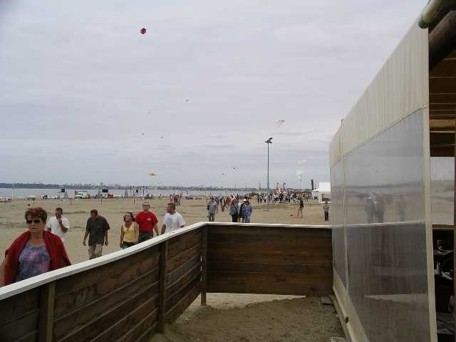
Mais midi arrive. C'est la migration vers la paillote, un peu plus loin. Pas d'orchestre cette année, mais toujours un bon punch !

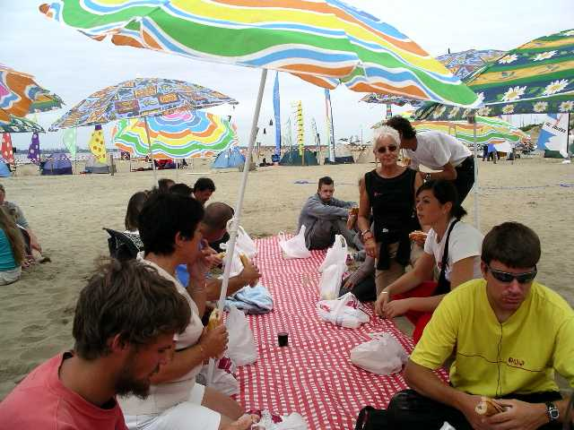
Ensuite, pique-nique sur la plage sur des nappes et sous des parasols pas complètement nécessaires, mais ça crée l'ambiance...

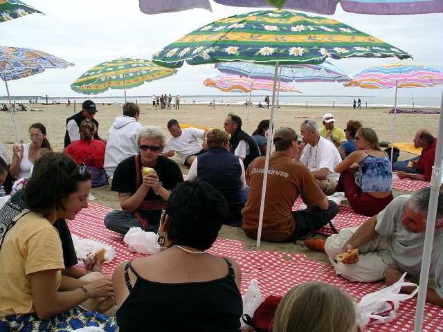
Tout le monde mange de bon coeur ses 2 sandwiches et sa pomme en buvant sa bouteille d'eau et son verre de vin.

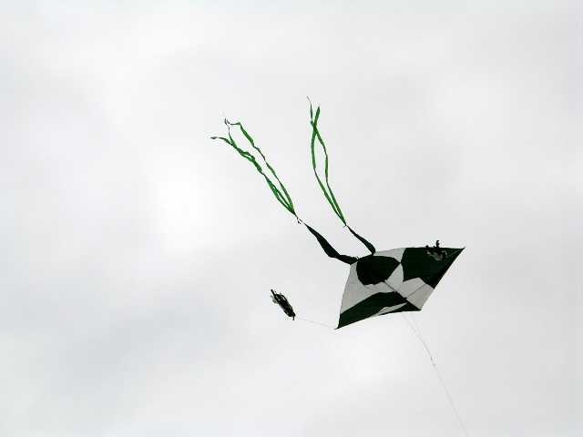
Allez, fini le repas, on revole ! Je ne sais pas qui a construit cet Eddy Noir et blanc. En tous cas, pas Jean-François qui n'était pas là !

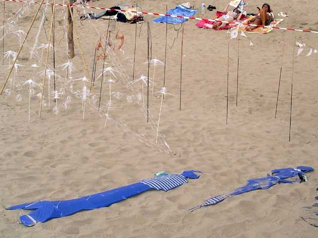
Thérèse a fait voler un peu son marin et sa copine marinette. Elle a aussi monté son jardin du vent, il n'y en a guère eu d'autres...

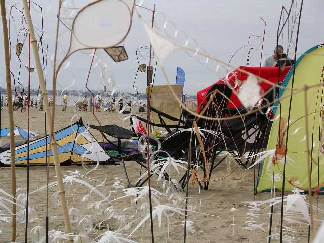
Elle a ajouté des chaînes d'anneaux de cristal du plus bel effet !

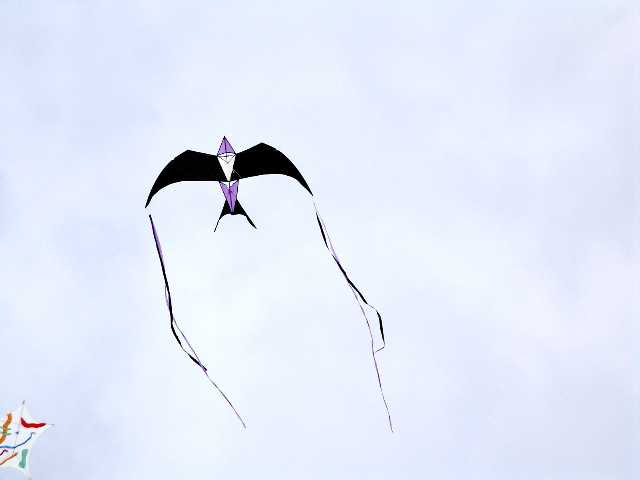
J'ai encore remarqué cet oiseau, aux formes biologiques, mais plus stylisé que les miens !

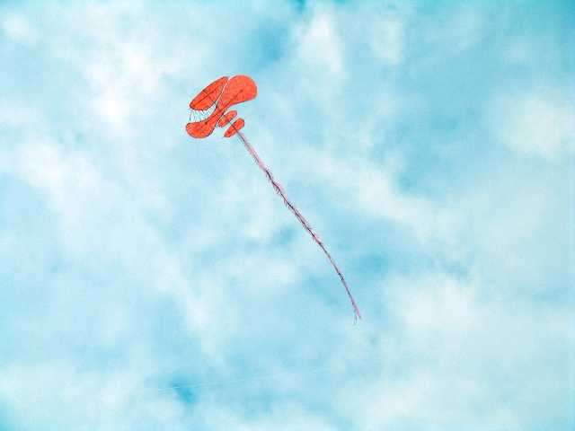
Et aussi cet amusant cerf-volant que je n'ai pu voir de près, sans doute papier et bambou, avec une jolie queue duveteuse...

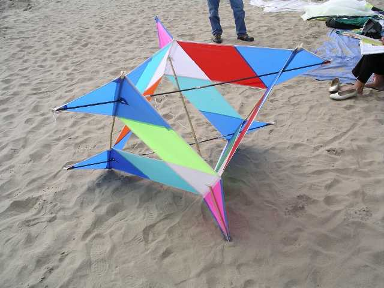
Enfin, j'ai pu examiner de près ce cerf-volant dont je ne comprenais pas la forme. Il appartient à Raymond qui a trouvé l'idée dans de vieux manuels.

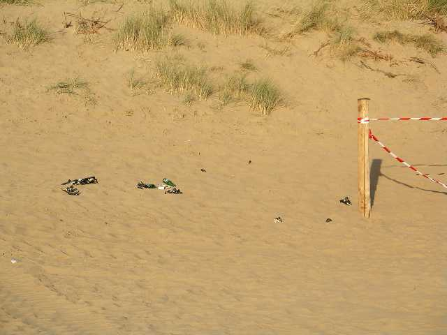
La sono s'est montrée égale à elle-même : mettant sa fierté à cracher des watts assourdissants malgré les appels à la modération de Cyril, mais incapable de fournir un micro qui marche de façon fiable, ne retrouvant pas les CDs des présentations, etc.
Mais finalement, le festival de Saint-Brévin s'est bien passé, sauf pour moi : grippé, presque pas volé, pardon aux organisateurs, 39°5 en rentrant à la maison et le reportage encore à faire... Mais je reviendrai prendre ma revanche, na !